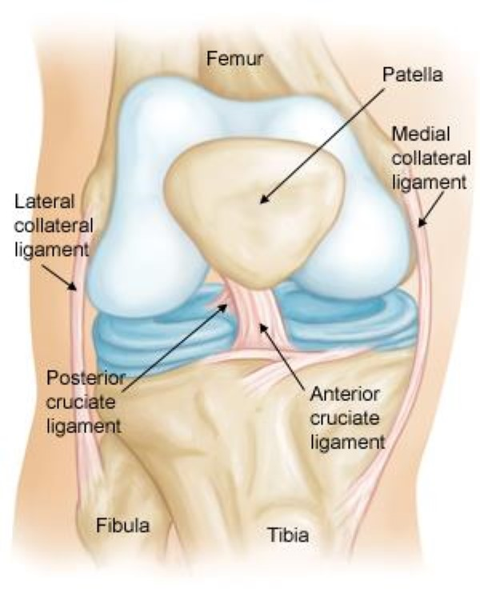

← Explore all Post-Surgical Rehabilitation services
Post-Surgical Rehabilitation for Active Lives
Orthopedic surgeries such as ACL reconstruction, rotator cuff repair, meniscus surgery, and Achilles tendon repair are among the most common procedures for active individuals in Bend, Oregon. Whether you sustained an injury skiing at Mt. Bachelor, playing in a competitive soccer league, or rock climbing at Smith Rock, the surgical repair is only the beginning of your recovery. Post-surgical physical therapy is what transforms a repaired structure into a functional, resilient, and confident joint that can withstand the demands of your active lifestyle.
At Resolve Physical Therapy, post-surgical rehabilitation is one of our core specialties. Every session is one-on-one with a Doctor of Physical Therapy who understands both the biology of tissue healing and the specific demands of your sport or activity. We coordinate directly with your surgeon to follow the prescribed protocol while tailoring each session to your individual response, goals, and timeline. Founded by Jenny McAteer, DPT, our clinic provides the expert, personalized care that makes the difference between returning to your sport and returning to your sport at full capacity.
ACL Reconstruction Recovery

The anterior cruciate ligament is the primary stabilizer of the knee against anterior tibial translation and rotational forces. ACL tears are common in sports that involve cutting, pivoting, jumping, and sudden deceleration, including skiing, soccer, basketball, and lacrosse. ACL reconstruction replaces the torn ligament with a graft, most commonly harvested from the patellar tendon, hamstring tendons, or quadriceps tendon. The rehabilitation process following reconstruction is extensive but well-established, with a clear progression from initial healing through full return to sport.
Phase 1: Protection and Early Motion (Weeks 0–2)
The initial phase focuses on controlling pain and swelling, protecting the surgical graft, and initiating gentle range of motion. Exercises include quad sets, straight leg raises, heel slides, and ankle pumps. Full knee extension (zero degrees) is a critical early goal, as loss of extension is one of the most problematic complications after ACL reconstruction. Crutches and a knee brace are used per your surgeon's protocol. Your physical therapist will ensure that you understand the importance of achieving full extension during this critical early period.
Phase 2: Progressive Strengthening (Weeks 3–8)
As swelling resolves and range of motion improves, the rehabilitation program progresses to include closed-chain strengthening exercises such as mini squats, leg press, step-ups, and stationary cycling. Quadriceps strength recovery is the primary focus, as the quadriceps muscle group is profoundly inhibited following ACL surgery. Open-chain knee extension exercises may be introduced gradually, depending on your surgeon's protocol and graft type. Balance and proprioception exercises begin to restore the neuromuscular control that is disrupted by the ligament injury and reconstruction.
Phase 3: Advanced Strengthening (Months 3–5)
Between three and five months, the graft is undergoing ligamentization, the biological remodeling process that transforms the tendon graft into a functional ligament. Rehabilitation during this phase includes progressive resistance training, single-leg strengthening, advanced balance exercises, and introduction of light jogging on a treadmill (typically around month four, when cleared by your surgeon). Your therapist will monitor your movement quality closely and address any compensatory patterns that could compromise the graft or lead to secondary injury.
Phase 4: Sport-Specific Training (Months 5–9)
Sport-specific training begins once your strength, range of motion, and functional performance meet established criteria. This phase includes progressive agility drills, plyometric exercises, change-of-direction training, and sport-specific skills. Exercises are designed to challenge the knee in the movement patterns and loading conditions that it will experience during your sport. Your therapist may use video analysis to assess your movement quality during cutting, landing, and pivoting tasks.
Phase 5: Return-to-Sport Clearance (Months 9–12)
Return-to-sport clearance at Resolve PT is based on a comprehensive battery of objective tests rather than time alone. The criteria typically include quadriceps and hamstring strength within 90 percent of the uninjured leg, AxIT force plate symmetry testing to verify bilateral power output and landing mechanics, successful completion of a single-leg hop test battery with a Limb Symmetry Index of 90 percent or greater, demonstrated movement quality during sport-specific tasks, and psychological readiness for return to competition. Research consistently shows that athletes who meet these criteria before returning to sport have significantly lower re-injury rates than those who return based on time alone.
Rotator Cuff Repair Recovery

The rotator cuff is a group of four muscles and tendons that stabilize the shoulder joint and control its movement. Tears in the rotator cuff can occur from acute trauma, such as a fall while skiing or a shoulder dislocation during rock climbing, or from chronic degeneration over time. Surgical repair reattaches the torn tendon to the bone, but the repaired tissue requires a carefully controlled rehabilitation process to heal properly while gradually restoring range of motion and strength.
Weeks 1–6: Immobilization and Passive Motion
The early phase of rotator cuff rehabilitation prioritizes tendon healing. Your arm will be immobilized in a sling for four to six weeks, depending on the tear size and repair technique. During this period, your physical therapist will perform gentle passive range of motion exercises, meaning your therapist moves your arm while your muscles remain relaxed. This prevents the shoulder from becoming stiff while protecting the healing tendon. You will also perform exercises for the elbow, wrist, and hand to maintain circulation and prevent stiffness in the rest of the arm.
Weeks 7–12: Active-Assisted and Active Motion
Once the tendon has achieved initial healing strength, you will begin to use your own muscles to move the shoulder. This progression starts with active-assisted exercises, where your therapist or your opposite arm provides partial support while the repaired shoulder contributes progressively more effort. By the end of this phase, you should be able to actively raise your arm in multiple directions without assistance. Light isometric exercises begin to activate the rotator cuff muscles without placing excessive tensile load on the repair.
Weeks 13–20: Progressive Strengthening
Formal strengthening of the rotator cuff and scapular stabilizers begins between three and five months post-surgery. Your therapist will introduce progressive resistance exercises using bands, dumbbells, and cable machines. Strengthening progresses from isolated rotator cuff exercises to integrated overhead and functional movement patterns. Scapular stabilization exercises are critical during this phase, as proper scapular mechanics are essential for healthy shoulder function. Your therapist will use strength testing to track your progress and compare the surgical shoulder to the opposite side.
Months 5–8: Functional and Sport-Specific Recovery
Return to overhead activities, sport-specific movements, and full functional capacity occurs between five and eight months for most patients. The timeline depends on the size of the original tear, the quality of the repair, and your tissue healing response. Your physical therapist will design a graduated return-to-activity plan that includes sport-specific exercises, plyometric training for overhead athletes, and progressive loading to prepare the repaired tendon for the demands of your activities. For Bend athletes who rock climb, kayak, swim, or play overhead sports, this phase is designed to restore both the strength and the confidence needed to perform at your pre-injury level.
Meniscus & Achilles Tendon Repair
Meniscus Repair Recovery
The meniscus is a C-shaped cartilage structure in the knee that serves as a shock absorber and load distributor. Meniscal tears are common in active individuals and can occur from twisting injuries or degenerative changes. Surgical treatment options include meniscus repair (stitching the torn tissue) or partial meniscectomy (removing the damaged portion). The rehabilitation approach differs significantly between these procedures.
After meniscus repair, weight-bearing is typically limited for four to six weeks to protect the healing tissue, and deep knee flexion is restricted. Rehabilitation progresses gradually through range of motion restoration, quadriceps and hip strengthening, balance training, and functional activities. Most patients return to full activity between three and six months after meniscus repair. After partial meniscectomy, recovery is faster, with most patients walking normally within one to two weeks and returning to sport within six to twelve weeks.
Achilles Tendon Repair Recovery
The Achilles tendon is the largest and strongest tendon in the body, connecting the calf muscles to the heel bone. Complete rupture of the Achilles tendon is a devastating injury that is common in recreational athletes, particularly those in their 30s and 40s who engage in explosive activities like basketball, tennis, and running. Surgical repair reattaches the torn tendon ends and requires a carefully structured rehabilitation to restore strength and function while protecting the healing tissue.
Post-surgical Achilles rehabilitation typically begins with immobilization in a protective boot with the foot positioned in plantar flexion (toes pointed down). Over the first six to eight weeks, the ankle is gradually brought to neutral position through progressive wedge removal. Weight-bearing is advanced progressively, and gentle range of motion exercises begin as tissue healing permits. Active calf strengthening typically begins around eight to twelve weeks, progressing from isometric exercises to concentric and then eccentric strengthening. Return to sport usually takes six to twelve months, depending on the sport's demands and the individual's healing response.
At Resolve Physical Therapy, we follow evidence-based Achilles tendon rehabilitation protocols that have been shown to produce superior outcomes compared to conservative approaches. Progressive calf loading, eccentric strengthening, and graduated return-to-running programs are the cornerstones of our Achilles rehabilitation approach. We use calf raise endurance testing and force dynamometry to verify that the repaired tendon has achieved sufficient strength and endurance before clearing return to sport.
Related Services
ACL reconstruction, rotator cuff repair, meniscus surgery, and Achilles repair are part of our comprehensive post-surgical rehabilitation program. If you are recovering from a total knee or total hip replacement, visit our joint replacement page for detailed information about those rehabilitation protocols and week-by-week recovery timelines.
Frequently Asked Questions
How long does ACL reconstruction rehabilitation take?
ACL reconstruction rehabilitation typically spans nine to twelve months, with the first six months focused on restoring range of motion, strength, and functional movement patterns. Return-to-sport clearance at Resolve PT is based on objective criteria including strength symmetry testing, hop tests, and sport-specific movement assessments rather than time alone. Most athletes begin sport-specific training between months six and nine, with full clearance between nine and twelve months.
When can I return to overhead activities after rotator cuff repair?
Return to overhead activities after rotator cuff repair depends on the tear size, repair technique, and tissue healing. Small tear repairs may allow overhead motion as early as three to four months, while larger repairs may require five to six months of protected rehabilitation. At Resolve PT, your therapist will follow your surgeon's specific protocol and use objective strength testing to guide progression to overhead activities safely.
Should I do prehabilitation before my ACL surgery?
Yes. Research consistently shows that patients who complete pre-surgical physical therapy before ACL reconstruction achieve better post-surgical outcomes. Prehab focuses on reducing swelling, restoring range of motion, and maximizing quadriceps strength before surgery. Patients who enter surgery with better knee function tend to recover faster and return to sport sooner. At Resolve PT, we offer comprehensive ACL prehabilitation programs.
How soon after surgery should I start physical therapy?
For ACL reconstruction, physical therapy typically begins within the first week after surgery. For rotator cuff repair, the timing depends on the repair complexity and surgeon preference, but most protocols begin passive motion within one to two weeks. Meniscus and Achilles tendon repair timelines vary based on surgical technique. Your surgeon will provide specific instructions, and we coordinate closely to ensure seamless care. Call (541) 306-1099 to schedule your post-surgical evaluation.
Begin Your Post-Surgical Recovery
The rehabilitation you do after surgery determines the outcome you achieve. At Resolve Physical Therapy in Bend, Oregon, our Doctors of Physical Therapy provide the one-on-one expertise and progressive programming needed to return to your sport at full capacity. Contact us today to schedule your post-surgical evaluation.